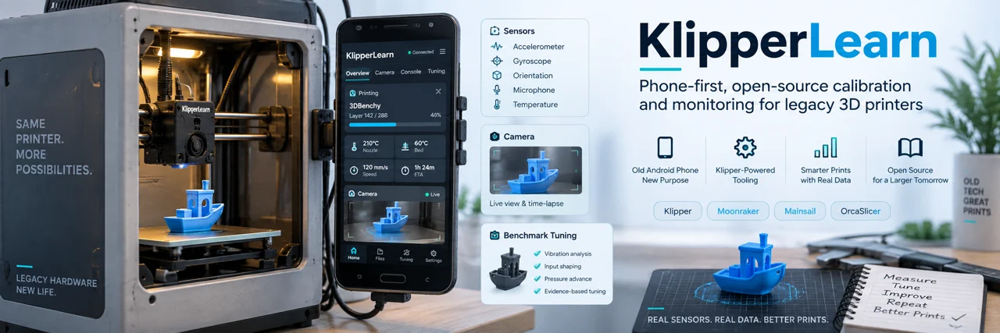

Quality
Prioritize reviewed surface and geometry scores from repeatable, acceptable trials.
LOCAL FILES · OPTIONAL OFFLINE MODE
Open the free review app Browser packages and printable model kit
This is the bounded reference reviewer, not the full Python three-mode optimizer. Offline caching is optional; selected sessions are never uploaded.
FREE · OPEN SOURCE · COMMUNITY PREVIEW
Turn original photographs, print logs and repeatable trials into reviewed slicer settings. Keep your machine. Understand every adjustment.
Demo: original 0.1.0 local evaluator, not the current host application. Phone optional. GPL-3.0-or-later. No publisher subscription. No guaranteed performance gains.

ONE CONFIGURATION, THREE PRIORITIES
Prioritize reviewed surface and geometry scores from repeatable, acceptable trials.
Balance quality and time with an explicit, inspectable selection policy.
Choose the fastest acceptable tested configuration without silently reducing layer count.
Modes can legitimately be identical. Missing or incomparable evidence produces a clear explanation—not invented settings or a claimed optimum.
START SMALL
All packages are free. The release includes source, licenses and SHA-256 checksums. These are independently maintained integrations, not upstream endorsements.
For OrcaSlicer, modes use paired process and filament presets. Other slicers currently use evidence adapters or a settings report, not a universal preset format.
WORK WITH THE ECOSYSTEM
External tooling—not ten merged features. Native application and physical acceptance requirements are recorded in the integration ledger.
Keep different printers and test models separate. The Flashforge Benchy series was operator tuning advised by ChatGPT, not KlipperLearn. The Anycubic 4Max Pro charts and cube trials used the separate KlipperLearn, phone and webcam setup.
Read the benchmark provenance →We welcome native-slicer import checks, reproducible bug reports and safely supervised validation. Share a minimal sanitized example, not credentials or your whole printer workspace.
Report compatibility →